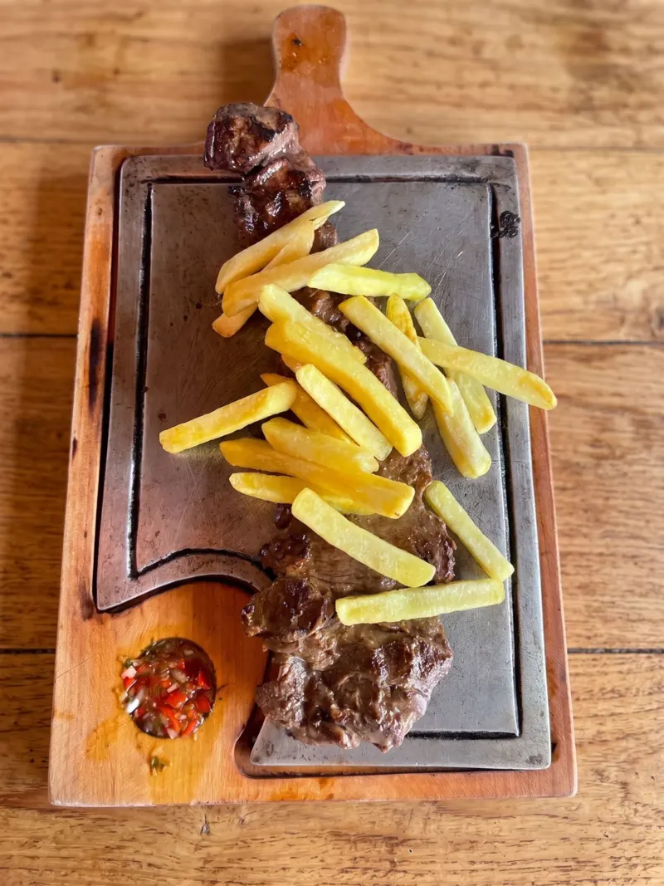
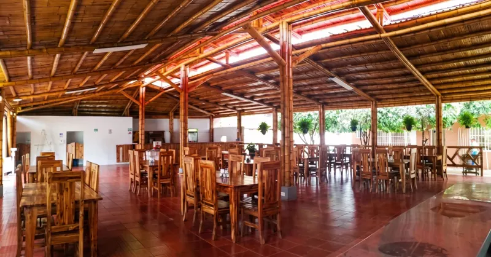
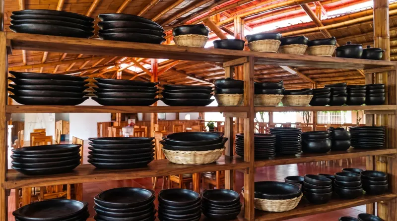

A la brasaBaby Beef a la parrilla
Consultar
Corte tierno asado al carbón, servido en plancha caliente con papas y ají de la casa.

El Carmen de Apicalá · Tolima
Todos los días de 12 a 5 p. m.: parrilla al carbón, pescado de río y recetas de la tierra servidas en loza de barro, bajo un gran salón de guadua donde la brisa de Apicalá invita a quedarse.
Recomendado por Restaurant GuruReconocimiento a la experiencia gastronómicaEspecialidades de la casa
Cocina colombiana de alma: brasa de carbón, pescado de río y acompañantes de siempre, con ingredientes frescos del Tolima.

A la brasaConsultar
Corte tierno asado al carbón, servido en plancha caliente con papas y ají de la casa.
 Del río
Del río
Consultar
Mojarra entera frita al punto exacto, con patacón, yuca, ensalada y limón. Sobre hoja de bijao.
 Típico
Típico
Consultar
Bagre de río en salsa criolla con mazorca, papa y arroz, cocinado sobre hoja de bijao y servido en cazuela de barro.
Limonada de coco
Para el calor de Apicalá
Consultar
La favorita del verano, y jugos naturales de lulo, maracuyá, mango, guanábana o mora según la temporada.
También: sopas y caldos, parrilla, platos típicos, almuerzo del día. Hacemos domicilios.

4,7 ★
Calificación en Google
Nuestra esencia
Construimos Santos Sabores pensando en el clima de El Carmen de Apicalá: techos altos de guadua, espacios abiertos que dejan pasar la brisa y una terraza rodeada de verde. Aquí se llega con la familia, con amigos o después de la piscina, y se queda uno conversando.
Servimos en loza negra de barro, la misma tradición artesanal del Tolima que conserva el calor del plato hasta el último bocado.
Lo que dicen nuestros visitantes
“Definitivamente uno de los mejores platos que he probado. Sazón, porciones, pescado en su punto. Excelente servicio.”
“El mejor restaurante dentro del Carmen. La comida es excelente y la atención es muy buena. Sin duda el mejor lugar.”
“La comida deliciosa, se siente la calidad de sus productos. El ambiente tranquilo, espacioso y fresco.”
“Es el mejor restaurante en Carmen de Apicalá. La sazón es muy buena. Pet friendly, tiene zona de parqueo propio.”
“Excelente comida, generosa, bien presentada. Un lugar muy agradable en el que sin duda repetiremos.”
“Amazing taste of Colombian gastronomy. It was my best experience on my trip and holiday. I loved it!”
Antes de venir
En Santos Sabores, Cra. 10 #5-79, Carmen de Apicalá (Tolima); en Google Maps nos encuentras como “Santos Sabores – Restaurante Parrilla”. Preparamos baby beef, costilla, picada y otros cortes a la brasa de carbón, servidos en plancha caliente con papas y ají de la casa.
Atendemos todos los días de 12:00 m. a 5:00 p. m. Y sí, hacemos domicilios en El Carmen de Apicalá: pide por WhatsApp o llama al +57 311 523 9953.
Escríbenos por WhatsApp o llámanos al +57 311 523 9953 indicando fecha, hora y número de personas. Recibimos familias, grupos y celebraciones.
Sí a las dos: somos pet friendly y tenemos parqueadero propio para que llegues tranquilo.
Visítanos
Dirección
Cra. 10 #5-79
Carmen de Apicalá, Tolima, Colombia
Usa el botón “Cómo llegar”: te lleva directo con Google Maps.
Horario
Todos los días · 12:00 m. – 5:00 p. m.
Teléfono, WhatsApp y domicilios
+57 311 523 9953Santos Sabores
Cra. 10 #5-79 · Carmen de Apicalá